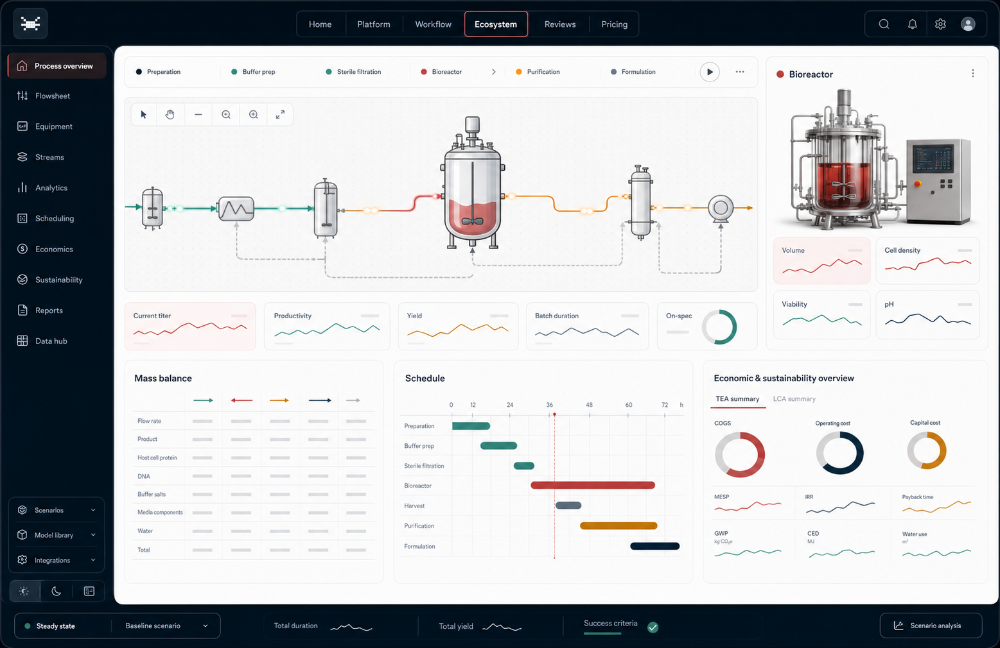

Start with words. Continue with an editable engineering model.
The first step is not a template menu. Describe the product, scale, organism, quality target, and constraints; Axion chooses a process family and opens the workspace.

Model a 10,000 L CHO monoclonal antibody process with fed-batch production, Protein A capture, viral inactivation, UF/DF, CIP/SIP, heat recovery, ammonium boundary checks, and CFD screening.

The first step is not a template menu. Describe the product, scale, organism, quality target, and constraints; Axion chooses a process family and opens the workspace.
Build PFD-like flows with main process, utilities, cleaning, heat reuse, recycle, QC, and emissions layers.
Screen oxygen, nutrients, shear, feed zones, and hotspots before commissioning rigorous CFD.
Every model can connect to assumptions, SOP notes, literature, stream tables, mass balances, LCA inventory, TEA drivers, cost-stack graphics, and readiness recommendations.
Build Loop
Describe product, organism, scale, constraints, and production intent in one sentence or a detailed brief.
Axion turns the brief into an editable model with equipment, process logic, streams, balances, and assumptions.
Adjust the flowsheet, add support systems, inspect equations, export tables, and ask the help panel what to improve.
Platform
Start with penicillin, cultured meat, antibodies, fermentation, vaccines, plasmids, cell therapy, water, or emissions. Axion maps the brief to a process architecture.
Drag equipment, connect animated streams, add CIP/SIP, recycle, heat reuse, utilities, valves, sensors, QC nodes, and support infrastructure.
Work with mass and energy balances, chemical equations, stream tables, parameters, economics, standards, LCA inventories, TEA cost drivers, and downloadable CSV/SVG datasets.
Ask what blocks oxygen transfer, ammonium control, media cost, scale-up, cleaning, heat recovery, or facility readiness, then jump to the right tool module.
Generates seed train, production STR, harvest, depth filtration, Protein A, low-pH viral inactivation, polishing, UF/DF, fill, QC release, CIP/SIP, mass balance, LCA inventory, and TEA cost stack.
Shows media preparation, seed expansion, perfusion bioreactor, cell-retention, harvest wash, formulation, packaging, ammonia and lactate boundaries, heat reuse, wastewater, and water-reuse loops.
Builds sterile media, aerobic fermentation, cell removal, extraction, solvent recycle, crystallization, drying, emissions, hazardous solvent checks, route scheduling, and downstream yield sensitivity.
Import or reconstruct one representative process, validate mass balance and economics, then evaluate scenarios collaboratively in the browser.
Shared projects, roles, invitations, audit history, model versions, process alternatives, and comparison-ready decision records.
JSON process model, API handoffs, cloud batch runs, parameter sweeps, Monte Carlo cases, and LIMS/historian/ERP connectors.
Time-dependent cell growth, metabolites, live plant data, calibration, soft sensors, anomaly checks, and online prediction roadmap.
Sensitivity, Sobol-style ranking, probabilistic costs, uncertainty bands, parameter fitting, and scenario comparison without spreadsheet add-ins.
Regional cost indices, vendor quotes, CAPEX ranges, media and consumables, NPV/IRR/break-even, cash runway, and key cost drivers.
High-demand biopharma example
Based on common CHO/mAb platform process structure and general bioprocess-engineering practice. Axion is not copying proprietary simulator files; it demonstrates an original, editable workflow around this process type.
Workflow
Open parameters, lower media intensity, test titer/recovery tradeoffs, inspect ammonium/osmolality warnings, compare direct cost, then download TEA-ready CSV for the new scenario.
Jump to CFD, check kLa/OTR margin, mixing time, gas hold-up, shear and dead zones, then return to Process Builder to split the reactor into parallel scale-out trains.
Use streams and reports to export water, WFI, media, chemicals, utilities, waste, emissions, per-batch values, annual values, per-kg values, and screening CO2e factors.
Why Axion
Most early biomanufacturing work is scattered across slides, spreadsheets, literature PDFs, old simulator files, supplier notes, and meeting decisions. Axion is designed as the central product-engineering surface where a team can move from a product idea to a defendable process concept without losing the assumptions behind the model.
The tool does not only draw boxes. It separates main production equipment from support systems, makes utilities and cleaning visible, attaches equations to the process, highlights physical and biochemical boundaries, and prepares the tables a team needs for review.
Use Cases
Turn a product brief into a structured upstream, downstream, utilities, cleaning, waste, and quality-control model. Start with a complete baseline, then edit the flowsheet instead of rebuilding it from scratch.
Evaluate lab, pilot, demo, and commercial assumptions with non-linear cost behavior, facility burden, utilization, recovery, heat load, oxygen transfer, and batch-duration changes.
Surface ammonium, lactate, DO, pH, shear, kLa, temperature, sterility, hold-time, cleaning, media-cost, waste, and heat-reuse risks before a model becomes expensive to change.
Use the workspace to brief suppliers, advisors, investors, CDMOs, university teams, and internal reviewers with a visible process logic, not only a spreadsheet summary.
Partner-ready ecosystem
For conceptual design, CAPEX/OPEX, facility fit, utilities, scheduling, debottlenecking, and client scenario review across many projects.
For mAbs, vaccines, cell and gene therapy, viral vectors, biologics, tech transfer, COGS, capacity planning, and site-standardized models.
For cultivated meat, precision fermentation, enzymes, ingredients, food processing, media cost, downstream recovery, utilities, and sustainability.
Attach papers, supplier data, standards, assumptions, and SOP notes directly to units, streams, parameters, and scale-up decisions.
Model CSV uploads, historian data, OPC UA, SCADA, sensor streams, batch records, and source-backed parameter updates.
Use structured recommendations to see what still has to be added before a full production simulation is defensible.
Map DO, pH, temperature, airflow, agitation, pressure, feed mass and conductivity tags to live digital-twin variables and compare them with the model envelope.
Attach bioreactor, filter, resin, membrane, CIP skid and clean-utility assumptions to CAPEX/OPEX rows so TEA reviewers can replace screening factors with quoted values.
Use Axion’s model cards to decide where equation-oriented modelling, parameter estimation, optimization, soft sensors, web apps and utility optimization should be connected next.
Market Intelligence
Public client lists and licence benchmarks do not reveal individual customer contracts, exact seat counts, current usage intensity, private contacts, or negotiated enterprise terms. Axion should use this as market intelligence, not as a claim that any named organization pays a specific amount today.
Mosa Meat, Perfect Day, Remilk, UNIVERCELLS, Northway Biotech, PROCESSIUM, Pixon Engineering, MMR Consulting, Nexus PMG, VTU Engineering, smaller CDMOs, and European precision-fermentation startups.
Best wedge: fast feasibility study, scale-up, media cost, COGS, facility fit, and investor/supplier review.NNE, PM Group, CRB, Pharmaplan/TTP/Triplan, Jacobs, Technip Energies, Wood, and Tetra Pak.
Best wedge: one parallel feasibility study comparing speed, collaboration, versioning, and model transparency with the existing workflow.WuXi Biologics, Lonza, Thermo Fisher Scientific, Novo Nordisk, Roche, Pfizer, Sanofi, Novartis, Takeda, and GSK.
Prerequisites: references, security documentation, enterprise access control, audit trails, validation evidence, and procurement readiness.NNE, PM Group, CRB, TTP Group, Pharmaplan, Triplan, VTU Engineering, PROCESSIUM, PROCESSCONSULT, Pixon Engineering, MMR Consulting, Nexus PMG, Scitech Engineering, Technip Energies, Wood, Jacobs, Fluor, SNC-Lavalin, Samsung Engineering, Shanghai Biying Engineering, Sino Pharmengin.
Pfizer, Roche, Genentech, Novo Nordisk, Novartis, Sanofi, Takeda, WuXi Biologics, Lonza, Thermo Fisher Scientific, Samsung Biologics, UCB Pharma, Octapharma, Bristol Myers Squibb, Eli Lilly, Merck, GSK, Biogen, Regeneron, Genmab, Nitto Denko Avecia, Olon, Syngene International, Northway Biotech, UNIVERCELLS Vaccines, Spark Therapeutics, uniQure, Sutro Biopharma, PTC Therapeutics, Xellia Pharmaceuticals.
Mosa Meat, Perfect Day, Remilk, Noblegen, PiP International, Novozymes/Novonesis, Roquette, PepsiCo, Unilever, Tetra Pak, Tereos, ADM, Bio-Springer, Procter & Gamble, Colgate-Palmolive, Bayer, Dow, DuPont, Petrobras, TotalEnergies, Zymergen, CJ Corporation, FMC BioPolymer, Hitachi Plant, Sartorius Korea, VIRBAC, Natura Cosméticos.
National Research Council Canada, RISE Sweden, A*STAR/SIFBI Singapore, UFZ Germany, USDA, U.S. Department of Defense, U.S. Army, U.S. EPA, and historical DOE/Sandia-style research users.
Import or reconstruct one process, validate mass balance and economics, then show how a team can evaluate scenarios, branches, assumptions, sources, LCA/TEA outputs, and readiness gaps in the browser.
Inside The Product
Drag and connect reactors, filters, separators, tanks, pumps, valves, sampling points, sensors, chromatography, sterile operations, utility units, CIP/SIP loops, recycle paths, and heat-reuse equipment. The visual model distinguishes main production from supporting elements so the plant reads logically.
Mass balances, energy balances, growth kinetics, oxygen transfer, substrate uptake, heat duty, recovery, yield, cleaning demand, media demand, waste load, and cost equations stay accessible as part of the workspace.
Axion highlights cell-culture and fermentation constraints such as oxygen limitation, ammonium accumulation, heat removal, shear, residence time, hold time, sterility, and equipment-size boundaries. The help panel translates process problems into concrete modelling steps.
The interactive reactor visualization helps teams reason about mixing, oxygen distribution, feed zones, nutrient gradients, shear-sensitive regions, and scale-up risk before commissioning detailed CFD studies.
Download stream tables, input/output flows, assumptions, mass and energy balances, detailed LCA inventories, LCA impact summaries, TEA-ready cost models, reactions, parameters, equipment lists, source notes, readiness gaps, and crisp SVG visuals for review outside the tool.
Attach standards, supplier data, literature, Merck-style process references, internal notes, and validation assumptions to the equipment and parameters they affect, so model decisions are easier to defend.
Review Examples
These review examples are written as positioning targets for the private beta. They show the level of clarity, speed, and technical trust the product experience is designed to create.
“For the first time our process discussion felt visual, quantitative, and editable at the same time. We could see the main process, CIP, utilities, and scale-up constraints without jumping between five files.”
Bioprocess lead, cultivated protein startup“The value is not just the flowsheet. It is the way assumptions, equations, equipment, and sources stay connected. That makes technical review much faster and much less political.”
Academic biomanufacturing lab“The boundary checks are exactly what early teams miss: oxygen transfer, heat, ammonium, cleaning, hold times, waste, and recovery. It helps you ask the hard questions before the plant design hardens.”
Process development advisorClarity
Axion is designed first as a modern digital engineering workspace around bioprocess models: visual, collaborative, explainable, and AI-assisted. Over time, more mechanistic simulation modules can become native where they add value.
The public site explains the same workflow used inside the app: product brief, flowsheet, equipment, streams, equations, CFD, standards, sources, economics, LCA/TEA exports, SVG visualizations, recommendations, and downloads.
Founders, process engineers, university teams, CDMOs, food-tech teams, pharma development groups, consultants, and technical reviewers who need a clear process model before committing to expensive design work.
Pricing
Indicative annual pricing for Axion Process OS. Prices are shown in EUR, exclude VAT where applicable, and are positioned as a modern cloud workspace around process models, not as a low-cost desktop clone. Public desktop-simulator benchmarks cited in the attached research are roughly 7,000 USD/year for a fixed licence and 11,000 USD/year for a simulator-plus-scheduling bundle, while floating, site, and corporate agreements vary.
Comparable desktop process-simulator fixed licences are publicly cited around 7,000 USD per computer and year in the provided research context.
A combined simulator-plus-scheduling fixed licence benchmark is cited around 11,000 USD per computer and year.
Floating, multi-user, multi-year, site, and corporate agreements can differ materially and should not be reverse-engineered for named companies.
The stronger offer is browser collaboration, versioning, APIs, vertical templates, transparent economics, and a migration pilot around existing models.
per user / year
per user / year
per lab / year
per company / year
per team / year
per year
All paid plans include the core process workspace: visual plant logic, equipment, streams, equations, LCA/TEA handoff exports, downloadable visuals, uncertainty-ready reports, and explainable technical recommendations. Higher tiers add collaboration, governance, integrations, model libraries, support, migration pilots, cloud runs, private deployment, and enterprise access control.
Private workspace
Drag-and-drop builder
| Tag | Operation | ICS 71.120 | ISO/PFD name | Class | Size | Residence | Power | Standards | Status |
|---|
| ID | Direction | Role | From | To | Flow | Key components | Phase |
|---|